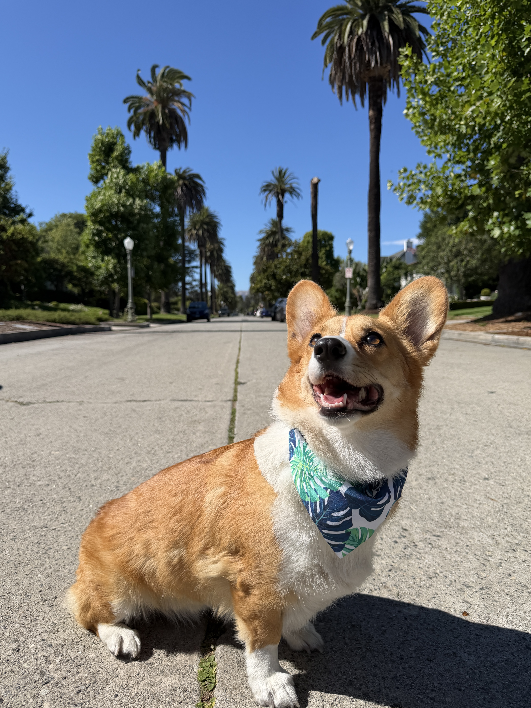

Adventures
Follow Bagel's journey to new places, road trips, parks, lakes, and more.
Food ☕︎ Travel ✈ Happier Days •ﻌ•
Hi! I'm Bagel, a Pembroke Welsh Corgi who loves exploring new places, trying new foods, and making happy memories along the way. Follow my adventures and see the world through my very short legs!
Start Exploring →
Hey! I'm Bagel ♡
🐾 PICK YOUR ADVENTURE 🐾
Follow Bagel's journey to new places, road trips, parks, lakes, and more.
A little collection of Bagel's favorite memories and adventures.
Give Bagel a virtual pet and see how this very happy corgi reacts.
Bagel has been waiting very patiently for attention.
This sandbox page was generated with AI using the following final prompt: